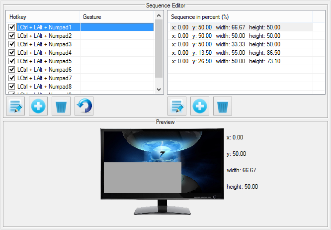
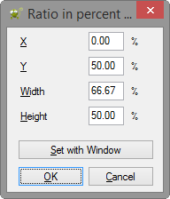

Navigation Tips 'n Tricks
Throughout Windows Master, there are tables such as the one below...

- Directly beneath the table is a brief description of an action. The context for the help description is whichever action is highlited. Since Snap to Bottom Left is highliged, the description is, "Snaps window to the bottom left corner of the monitor."
- Edit an action by double-clicking on a row; alternativelty, highlight a row and then: press Alt + E, press F2, or click the
 icon.
icon.
- Changes to the table are saved once you click on another tab (i.e. Sequencing) and upon clicking OK. Changes can only be undone on the current table by clicking the Cancel button.
In the sequence dialog only, addition, deletion, and editing is allowed...

- Edit an action or sequence by double-clicking on a row. Alternativelty, highlight a row and then: press Alt + E, press F2, or click the icon.
- Add an action or sequence by pressing: Alt + A or clicking the
 icon.
icon.
- Delete an action or sequence by pressing: Alt + D, Delete or clicking the
 icon.
icon.
Other Navigation Tips
Windows Master may be navigated nearly completely using only the keyboard. For any place that needs clicking, there is also a hotkey. The hotkey may be discovered by looking for a letter that is underlined. In the screenshot below, for example, X, Y, W, and H are all underlined. To focus the edit field for X, press Alt +X. To focus the edit field for Y, press Alt +X, and so on.
